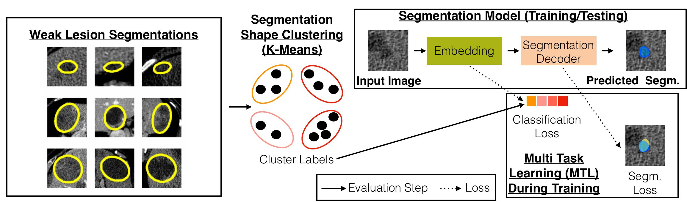
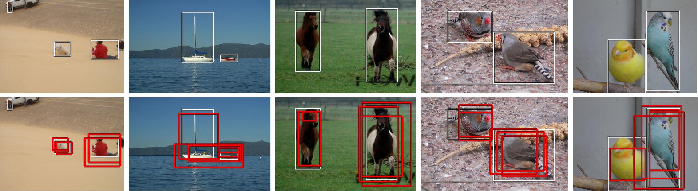
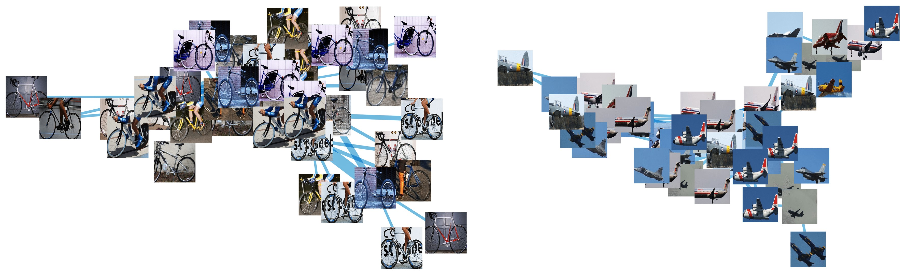
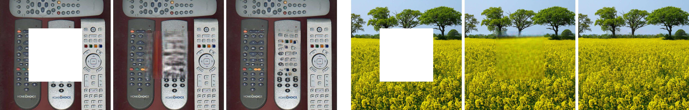

Huy V. Vo
van-huy.vo at inria.fr
Department of Computer Science
Ecole Normale Superieure
Paris, France
About
Hi! I am a final year PhD student in Computer Vision at Ecole Normale Superieure, INRIA and Valeo.ai. My research focuses on learning problems in images that require less supervision. The topics in which I am interested include object discovery, self-supervised feature learning, weakly supervised object detection/localization and active learning.
News
- 03/2021: Our paper on weakly supervised lesion segmentation is accepted at MIDL 2021.
- 07/2020: Our paper on object discovery is accepted at ECCV 2020.
- 10/2019: I am visiting Center for Data Science, New York University for 3 months.
- 03/2019: Our paper on object discovery is accepted at CVPR 2019.
- 10/2018: I start my PhD at Willow (ENS-INRIA) and Valeo.ai under the supervision of Prof. Jean Ponce and Dr. Patrick Pérez.
- 04/2018: I start a 6-month research internship at WILLOW (END-INRIA) and Center for Data Science (New York university), working on object discovery under the supervision of Prof. Jean Ponce and Prof. Yann LeCun.
- 04/2017: I start a 5-month internship at Technicolor, working on Inpainting under the supervision of Dr. Patrick Pérez.
Publications
Improving Weakly Supervised Lesion Segmentation using Multi-Task Learning
 [paper][code]Tianshu Chu, Xinmeng Li, Huy V Vo, Ronald M Summers, Elena Sizikova
Proceedings of the Int. Conf. on Medical Imaging with Deep Learning (MIDL), 2021.
Toward unsupervised, multi-object discovery in large-scale image collections
 [paper][code]Huy V Vo, Patrick Pérez, Jean Ponce
Proceedings of the European Conference on Computer Vision (ECCV), 2020.
Unsupervised image matching and object discovery as optimization
 [paper] [code]Huy V Vo, Francis Bach, Minsu Cho, Kai Han, Yann LeCun, Patrick Pérez, Jean Ponce
Proceedings of the IEEE/CVF Conference on Computer Vision and Pattern Recognition (CVPR), 2019, Long Beach, USA.
Structural inpainting
 [paper]Huy V Vo, Ngoc QK Duong, Patrick Pérez
Proceedings of the 26th ACM international conference on Multimedia (ACMMM), 2018.